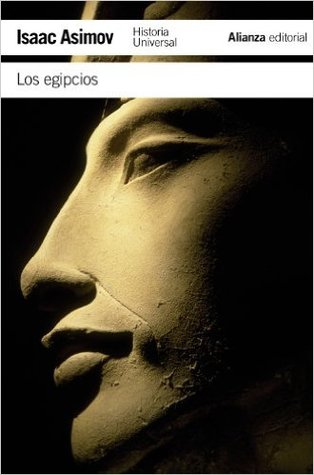

Los egipcios
Reseña por Jorge I. Zuluaga

Ver detalles · Ver reseña en GoodReads (necesita cuenta)
Este es mi segundo libro de Asimov leído con juicio (el primero fue La historia de la química). Lentamente empiezo a entender por qué este autor, que es más conocido hoy por sus inmortales novelas y cuentos de ciencia ficción, fue un divulgador tan grandioso. El "Carl Sagan de las letras", lo llamaría yo; o más bien (y más justo), Sagan es el "Asimov de la TV" (sin dejar de mencionar, por supuesto, que Sagan fue también un gran escritor de divulgación).
Todos asociamos el nombre de Asimov a las ciencias naturales: la astronomía, la química (su profesión) e incluso la biología, pero rara vez pensamos en sus impresionantes incursiones en la divulgación histórica. Obviamente es ignorancia, como lo he podido yo mismo descubrir a medida que me voy acercando a su inagotable y diversa obra.
En este increíblemente entretenido texto, Asimov cuenta la historia de Egipto desde el paleolítico hasta las dictaduras y guerras del siglo XX (el libro fue escrito a finales de los años 60, aunque el copyright de la edición que leí decía que fue publicado por primera vez en 1981). Estamos hablando de un recorrido de casi 6.000 años por la historia no solo de una de las más grandes civilizaciones de todos los tiempos, sino también por la de Mesopotamia, Siria, Asia Menor, Grecia y Roma, todo empacado en poco más de 300 páginas fáciles de leer.
Como es natural en Asimov, los daticos curiosos, incluso los de naturaleza científica, abundan por todo el texto (en este mini hilo en Twitter reproduje uno de los más interesantes que encontré, sobre la relación entre el nombre del amoníaco y el del dios egipcio Amón).
Me encanta su curiosidad por el origen de las palabras, reflejada en el hecho de que, a lo largo de todo el texto, está tratando de explicarnos de dónde vino este o aquel término, el nombre de una ciudad o el de un rey. ¡Sencillamente genial!
Es así como descubres que "esfinge" viene del griego que significa "el que estrangula"; el nombre de la capital moderna de Egipto, "El Cairo", viene de "Al Qáhira", la victoriosa; la palabra "obelisco" viene del griego "aguja", "copto" es "egipcio" contraído y "faraón" del término egipcio "per-o", que significa "la gran casa", que era como llamaban los egipcios del Imperio Nuevo a la institución monárquica. Y así por decenas de palabras y términos asociados al país de las dos tierras.
He tenido recientemente la oportunidad de leer un par de libros sobre la historia de Egipto. Todos escritos en años recientes por egiptólogos profesionales (y todos libros de divulgación, debo aclarar). Por eso me sorprendió el nivel de precisión y profundidad de este librito, escrito por el que supuestamente era un "aficionado" a la historia (que de aficionado no tenía ni un solo pelo de sus patillas).
Aunque el libro fue escrito en los años 60 y siempre en la egiptología te están advirtiendo de lo mucho que está cambiando la disciplina por la aplicación de nuevas técnicas de exploración arqueológica (en especial en el área de la cronología), hallazgos de campo novedosos, descubrimientos lingüísticos, etc., la verdad es que no encontré ningún anacronismo evidente en el texto de Asimov.
Por supuesto, yo sí que soy un aficionado, así que tampoco deberían confiar mucho en mi juicio a este respecto, pero les aseguro que, de existir un anacronismo evidente, se notaría.
Ya me compré el libro sobre los griegos de Asimov y cada vez me animo más a leer la guía a la Biblia del mismo autor (que tengo en mi biblioteca desde hace un par de años). Creo que me he enganchado al Asimov divulgador de la historia.
¡Lean a Asimov!